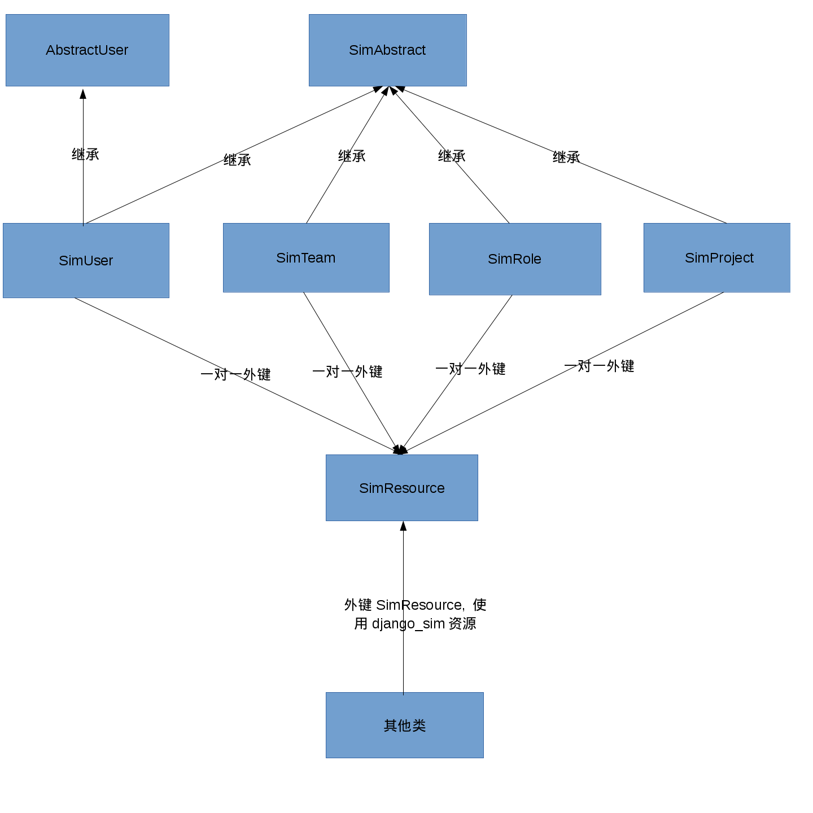

5. 资源¶
5.1. 资源结构¶
5.1.1. 访问资源结构¶
django_sim访问资源结构图:
SimResource
User,Team,Role,Project都是一种Resource。SimResource作为资源适配器统一访问资源给其他类使用:
class SimResource(models.Model): resource_type : Required, 整数类型，说明该resource的类型。可取值为0(user), 1(team), 2(role), 3(project) resource_id : Required, UUID字符串，每个resource的id是唯一的。 created : Required, Datetime类型，记录resource的创建时间。 last_modified : Required, Datetime类型，记录resource的最后修改时间。 is_valid : Required, Boolean类型，标志该资源是否有效SimAbstract
SimAbstract是SIM的User,Team,Role,Project的抽象类:
class SimAbstract(models.Model): resource_id : Required, UUID字符串。每个Resource的id时唯一的。 is_valid : Required, Boolean类型，标志该资源是否有效 external_id : Optional, 该资源的外部ID字符串。external_id由外部传入。例如时TOF的小组ID。 display_name : Optional, 字符串类型，该资源显示名称, 不同资源允许相同显示名称。SimUser
SimUser作为SIM User Model, 继承django.contrib.auth.models.AbstractUser和SimAbstract, 替换django原有认证User:
class SimUser(SimAbstract,AbstractUser): resource_meta : Required, 一对一外键指向一条SimResource记录。 team : Optional, 该用户所属team，外键指向一条SimTeam记录。 manager : Optional，该用户的manager，外间指向一条SimUser记录。SimTeam
SimTeam的Model的定义如下:
class SimTeam(SimAbstract): resource_meta : Required, 一对一外键指向一条SimResource记录。 name : Required, 字符串类型，该team唯一名称, 可用于保存team组织架构路径。 group : Required, 一对一外键指向一条django.contrib.auth.models.Group记录， 由于AbastractUser包含一对多外键groups指向Group, 因此可通过该外键 给该team添加额外成员。 level : Required, 字符串类型，该team层级, 现包括system(事业群)，department(部门)， centre(中心)，team(小组)，office(事业群)，area(片区), other(其他)。 parent_team : Optional，指向上级组织，外键指向一条SimTeam记录。SimRole
SimRole的Model的定义如下:
class SimRole(SimAbstract): resource_meta : Required, 一对一外键指向一条SimResource记录。 name : Required, 字符串类型，该role唯一名称。 group : Required, 一对一外键指向一条django.contrib.auth.models.Group记录， 由于AbastractUser包含一对多外键groups指向Group, 因此可通过该外键 给该role添加额外成员。 team : Optional，该role所属team, 外键指向一条SimTeam记录。SimProject
SimProject的Model的定义如下:
class SimProject(SimAbstract): resource_meta : Required, 一对一外键指向一条SimResource记录。 name : Required, 字符串类型，该project唯一名称。 owner : Optional，外键指向这个project归属的User，team或role。
5.1.2. 推送资源结构¶
SimBulk
SimBulk的Model的定义如下:
class SimBulk(SimAbstract): sender_time : Required, Datetime类型，sender推送到receiver的时间点，标志一次推送批次 seq : Required, 整数类型，标志该次推送批次的序列号，从0开始 method : Required, 整数类型，标志该次批次的推送类型， 0表示全量同步，1表示增量同步，2表示全量同步结束BULK，3表示增量同步结束BULK description : Optional, 文本类型，保存本次序列号推送的内容 created : Required, Datetime类型，BULK创建时间
5.1.3. 认证资源结构¶
SimAuth
SimAuth的model定义如下:
class SimAuth(SimAbstract): client_id : Required, 字符串类型，receiver oauth code认证的client_id client_secret : Required，字符串类型，receiver oauth code认证的client_secret sim_site : Required, 字符串类型，reciever的url前缀(格式:http://{receiver_hostname}) token_url : Optional，字符串类型，获取receiver access token url，在认证完成后自动生成 last_push_url : Opional , 字符串类型，获取receiver最后一次结束BULK的url，在认证完成后自动生成 push_url : Optional , 字符串类型，sender推送资源到receiver的url，在认证完成后自动生成 code : Optional，字符串类型，最后更新receiver的认证code, 在认证完成后自动生成 access_token : Optinal , 字符串类型，最后更新receiver的access token，在认证完成后自动生成 refresh_token : Optional，字符串类型，最后更新receiver的refresh token，在认证完成后自动生成 last_token_status : Optional，字符串类型，最后更新receiver access token的http状态 last_status : Optional，字符串类型，最后推送到receiver BULK的http状态
5.2. 资源访问接口¶
django_sim提供了两类资源访问接口，一类是http接口提供给client使用，另一类函数接口提供给server组装业务逻辑。
5.2.1. Http接口¶
django_sim的http接口需要通过 资源访问认证搭建 才有访问权限。
接口支持如下:
GET /users 获取用户列表 GET /users/<username> 获取指定用户信息 GET /users/<username>/teams 获取指定用户所在team列表 GET /users/<username>/roles 获取指定用户所在role列表 GET /teams 获取team列表 GET /teams/<id> 获取team详情 GET /teams/<id>/users 获取team下面的user列表 GET /teams/<id>/teams 获取team下面的team列表 GET /teams/<id>/roles 获取team下面的role列表 GET /teams/<id>/projects 获取team下面的project列表 GET /roles 获取role列表 GET /roles/<id> 获取role信息 GET /roles/<id>/users 获取role的user列表 GET /projects 获取project列表 GET /projects/<id> 获取project信息 GET /projects/<id>/users 获取project的user列表
5.2.2. 函数接口¶
django_sim的函数接口提供给server方进行业务逻辑组装，函数接口都是类静态函数可直接调用。
接口支持如下:
django_sim.views.UserViewSet.get_team_list(username) 获取指定用户所在team列表 django_sim.views.UserViewSet.get_role_list(username) 获取指定用户所在role列表 django_sim.views.TeamViewSet.get_team_users(team) 获取team下面的user列表 django_sim.views.TeamViewSet.get_team_list(team) 获取team下面的team列表 django_sim.views.TeamViewSet.get_team_roles(team) 获取team所在的role列表 django_sim.views.TeamViewSet.get_team_projects(team) 获取team相关的project列表 django_sim.views.RoleViewSet.get_role_users(role) 获取role下面的user列表 django_sim.views.ProjectViewSet.get_project_users(project) 获取project相关的user列表